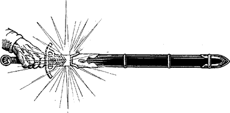

282
‘You wield a weapon imbued with great power, Lone Wolf,’ says Rimoah, glancing at the Sommerswerd sheathed at your side. ‘Be sure to use it well. Now that you possess the wisdom of the Lorestones, you will discover new strengths within its golden blade. It is the bane of the Darklords—the instrument of their destruction. Yet by the very nature of its power it can alert them to your presence and betray your identity.’ He reaches to his waist and unbuckles a seemingly plain leather sword belt and scabbard. ‘I have prepared this scabbard from materials impregnated with korlinium. It will contain and keep hidden the powers of the Sommerswerd,’ he says, handing you the accoutrements. ‘Remember, to unsheathe the Sommerswerd inside the Darklands is to light a beacon of warning that Gnaag and his fell minions will surely see. Only when you have Gnaag within striking distance should you draw your blade to seal his doom.’
{kind=link}

You discard your old scabbard in favour of Rimoah’s and take heed of his advice. (Mark the Korlinium Scabbard as a Special Item on your Action Chart. You need not discard another item in its favour if you already carry the maximum number of Special Items allowed.)